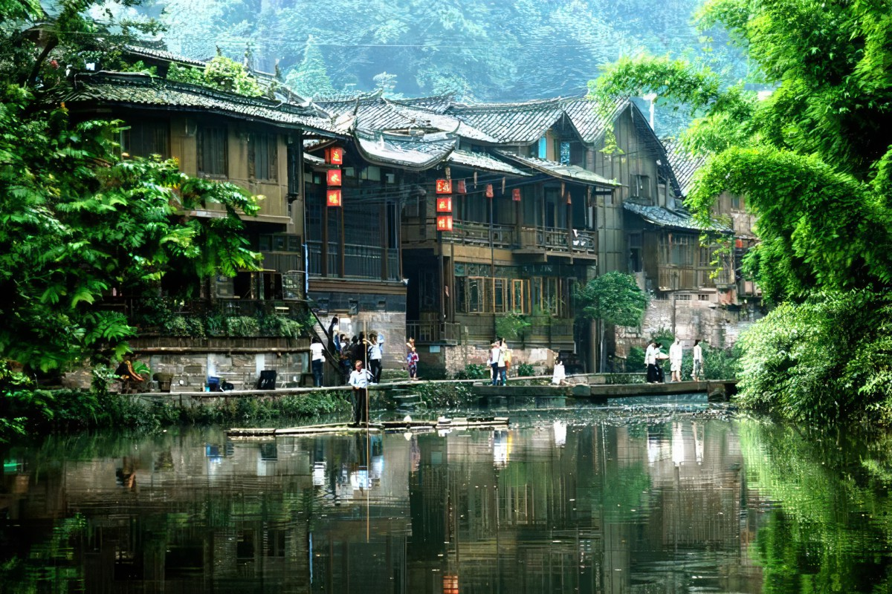
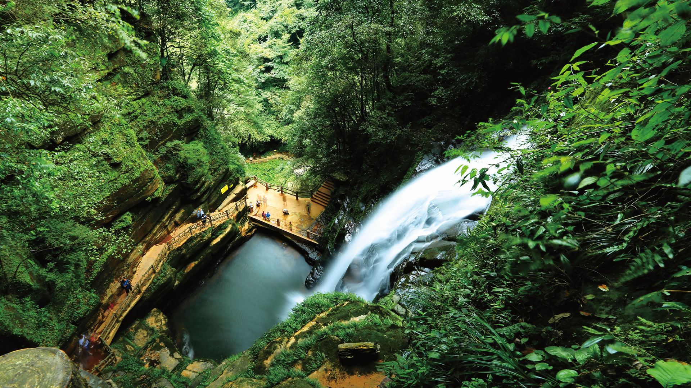
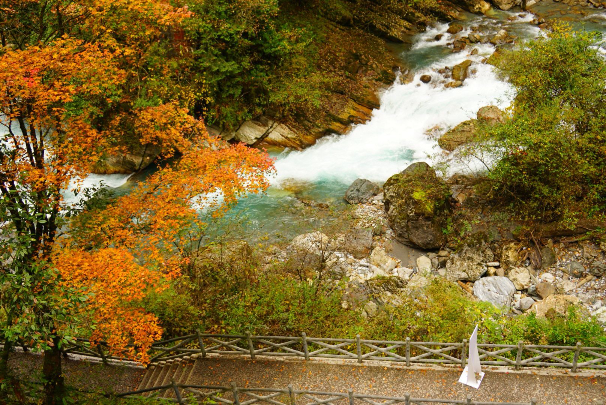

上里古镇 上里古镇，位于四川省雅安市雨城区北部，东接名山、鄢巘，西接芦山、雅安，是历史上丝绸之路临耶古道进入雅安的重要驿站，也是四川十大古镇之一。小镇依山傍水而建，许多明清风貌的吊脚楼式建筑，与溪水、古桥相映成趣，居高俯览，宛如观赏一幅古老的画卷。 除了文化古韵，上里的自然风光也十分迷人，从古镇沿河上溯1公里，有十余座古桥，造型无一相同，极具江南水乡特色。这些桥梁不仅是南来北往的通道，而且再现了古镇历史和匠师的技艺，古有诗云：“二水夹明镜，双桥落彩虹”，正是对上里古镇最生动形象的描绘。 |
 |
牛背山
牛背山属二郎山分支，位于四川省雅安市荥经县境内与泸定县交界的荥经县牛背山镇瓢儿沟，原名大矿山、野牛山。是青衣江、的分水岭，山顶海拔3666米。因山顶一面悬崖有巨石突出酷似牛头，山脊细长貌似牛背而得名。 牛背山地理位置为四面环山中间突起。
牛背山即为荥经县野牛山。 野牛山属二郎山南延山岭， 在地质构造上属大渡河背斜， 包括野牛山（海拔 3666米）、大野牛山（海拔3409米）、光头山（海拔3478米）、马场梁（海拔 3499米）、娘娘山、大矿山等主要山峰。 山岭总体为南北走向， 是荥河发源地。
|
|
碧峰峡
碧峰峡，国家AAAAA级旅游景区。因林木葱茏、四季青碧而得名。传说是补天英雄女娲所化而成，景区内60多个景点均与女娲有关，颇为神秘。在碧峰峡风景区你能呼吸到群山幽谷蕴酿的芳醇空气，寻找到万古犹存的补天遗迹，以及那些曾在此发生过的爱的、美的传说故事。
它像一首空灵的朦胧诗，一幅淡雅的水墨画，等待你去品味，去赏析。 碧峰峡风景区由两条峡谷构成，左峡谷长7公里，右峡谷长6公里，呈V字形，是一个封闭式的可循环游览景区。峡宽30-70米，海拔70-1971米，峡壁高度100-200米，青峰对峙，景色秀雅，是休闲度假、避暑纳凉的绝佳之地。
|
 |
二郎山喇叭河
喇叭河风景区位于四川雅安市，是国家级森林公园自然保护区，其中著名景点分别有鹿池、红石滩、银洞海、焦山、杜鹃湖等。四川二郎山国家森林公园内，是中国极具代表性的山地旅游景区，被评为国家4A级旅游景区、四川省生态旅游示范区。春天高山杜鹃、夏天蝴蝶飞舞、秋天满山红叶、冬天高海拔雪景是喇叭河一年四季的主要看点。景区打造了“万里云海”，“万丈金山”，“万亩杜鹃”等景。 |
 |
蒙顶山
蒙顶山，又名蒙山，位于四川省雅安市名山区蒙顶山风景名胜四川盆地西南部，横亘于名山区城西北侧，山势北高南低，呈东北一西南带状分布，延伸至雅安境内。山体长约10千米，宽约4千米。蒙顶五峰环列，状若莲花，最高峰上清峰，海拔1456米，景区总面积54平方千米，核心面积15平方千米。
蒙顶山因夏禹足迹所至而有“禹贡蒙山”之称。以入贡“皇茶”而有“仙茶故乡”之名；以风景秀丽有“游览胜地”之誉。蒙山因雨雾蒙蒙而得名。景区由蒙山和百丈湖两个主景区组合而成。 |
|
神木垒 神木垒位于四川宝兴县，距县城约50公里，海拔3000米左右，神木垒原生态风景区位于宝兴硗碛(qiāoqì)藏族乡西部，隶属夹金山国家级森林公园以及省级风景名胜区夹金山风景名胜区的一部分，景区面积约40平方公里，海拔 2300至4300米，以森林、雪高山草甸、高山钙化流池为主体景观。 神木垒既有参天古木，也有高原草甸，原始森林的风貌保存得很好，新修建的旅游山道和木桥，让人轻松穿行在空气清新的天然氧吧，藏族牧民的牛羊，骡马甚至放养的猪儿在山坡草甸惬意地啃食牧草，让人觉得仿佛到了世外桃源。有些藏民牵着牧马向游人兜售他们的服务，骑马上山。
|